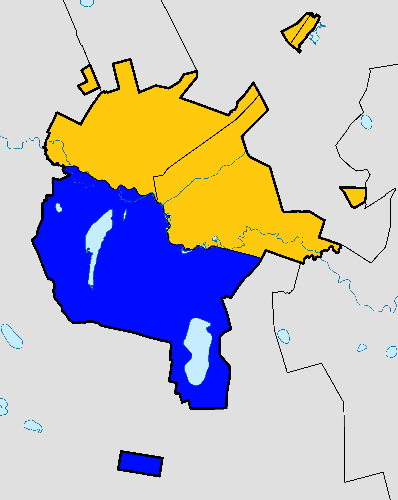

Astana — the heart of Kazakhstan, Astana is the modern capital of Kazakhstan, located in the center of the country. The city is young, but has grown very quickly: back in 1997, the capital was moved here from Almaty, and since then it has become the main political and business center.

About 1.4 million people live here. The city is divided by the Yesil River: on the left bank is a modern business center with skyscrapers, on the right are old districts with a more traditional atmosphere.
1. Baiterek Tower – The city’s main symbol with an observation deck offering a stunning panoramic view of Astana.
2. Khan Shatyr – A giant tent-shaped shopping and entertainment center with shops, cafes, and even an indoor beach.
3. Hazret Sultan Mosque – One of the largest mosques in Central Asia, known for its beautiful white architecture.
4. The Palace of Peace and Reconciliation – A glass pyramid symbolizing unity and peace, hosting exhibitions and cultural events.
5. Nur Alem (EXPO Sphere) – The world’s largest spherical building, featuring interactive exhibits about energy and technology.
6. Astana Opera – A grand opera house with world-class performances and impressive architecture.
7. Independence Square and Kazakh Eli Monument – A symbolic place representing Kazakhstan’s independence and pride.
8. Lovers Park – A peaceful green area in the city center, perfect for walking and relaxing with views of modern buildings.
9. Presidential Park – A large park with fountains, bridges, and scenic paths along the river.
10. National Museum of Kazakhstan – The largest museum in the country, showcasing Kazakhstan’s history and culture.
Dress for the Weather – Astana’s climate is extreme — very cold in winter and hot in summer. Bring warm clothes if you visit from November to March, and light ones for June to August.
Use Yandex Go or inDriver – Taxis are affordable and easy to book through these mobile apps — just like Uber.
Try Local Food – Don’t miss beshbarmak, kazy (horse sausage), and baursak (fried dough). Most restaurants also serve international dishes.
Visit the Left Bank – That’s where the main modern attractions are — Baiterek Tower, Khan Shatyr, and the EXPO area.
Explore on Foot or by Bike – Astana has wide sidewalks, bike paths, and clean streets — perfect for walking or cycling around the river.
Carry Some Cash – Cards are accepted almost everywhere, but small shops or markets may prefer cash (tenge).
Learn a Few Words in Kazakh or Russian – Locals appreciate it when tourists say “Rakhmet” (thank you) or “Salem” (hello).
Visit at Night – The city lights are beautiful — especially near the river and the Baiterek area.
Be Ready for the Wind – Astana is famous for its strong winds, even on sunny days. Bring a jacket just in case!
Respect Local Culture – People in Kazakhstan are friendly and polite. Smile, be respectful, and you’ll always get help if you need it.
To close the information window, click anywhere outside the window.
You need to go to the very bottom of the site where all the contact links are located.
To change the site settings, scroll down to the bottom of the site, or click on the settings button in the navigation bar